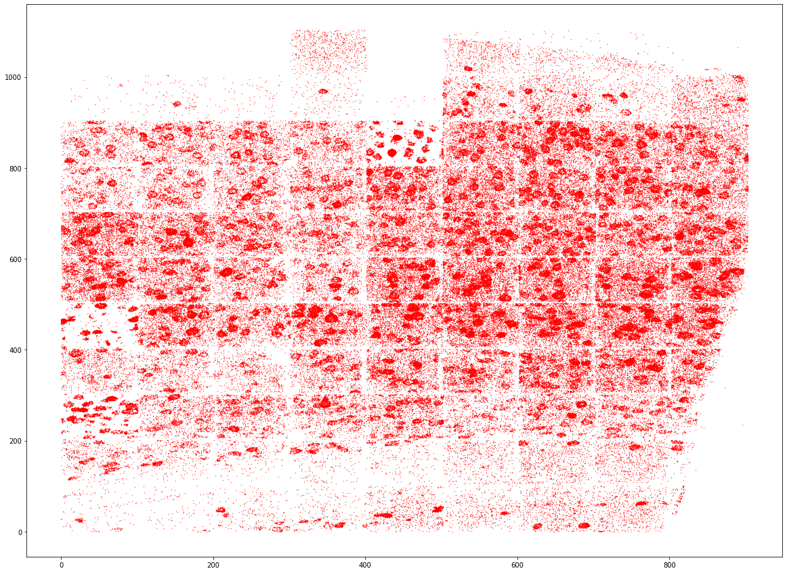
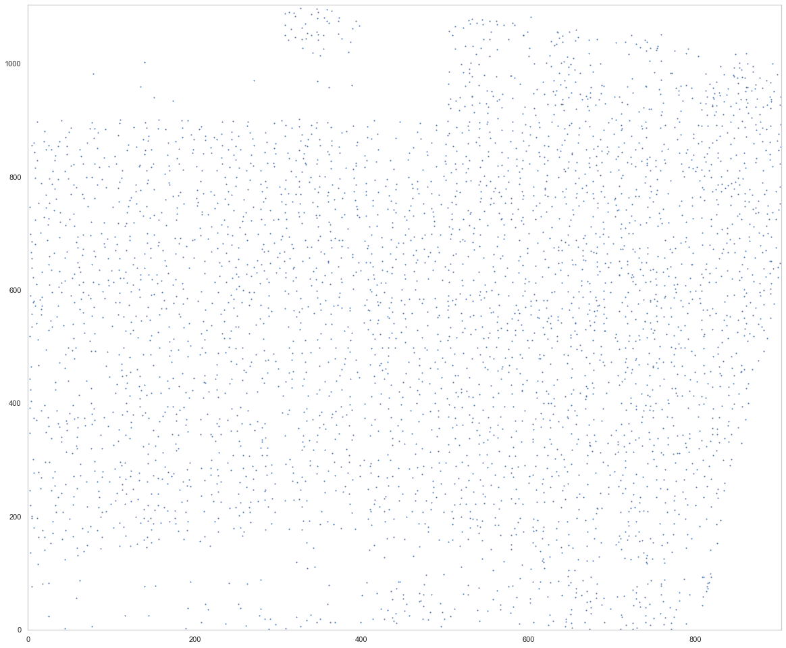
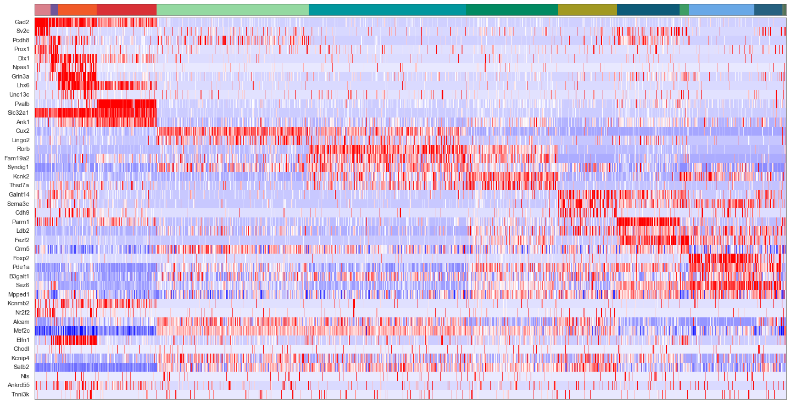
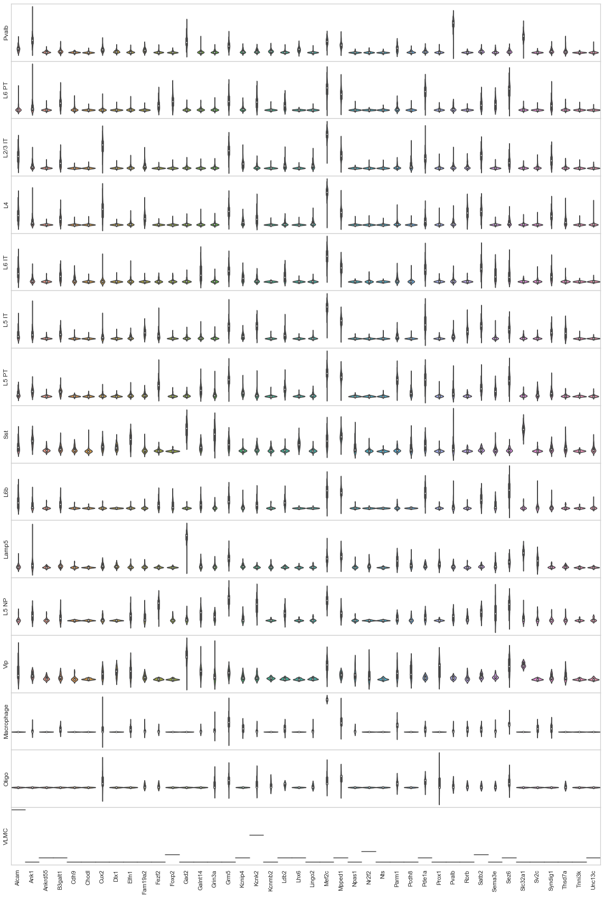
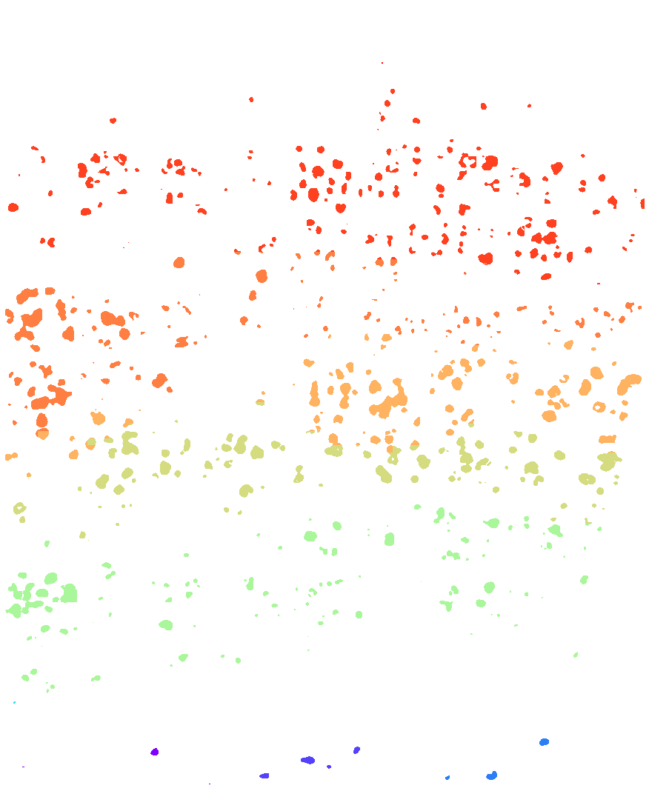
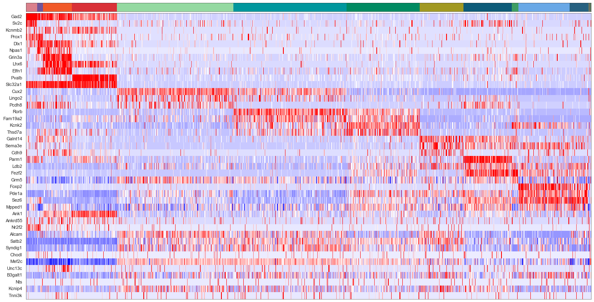
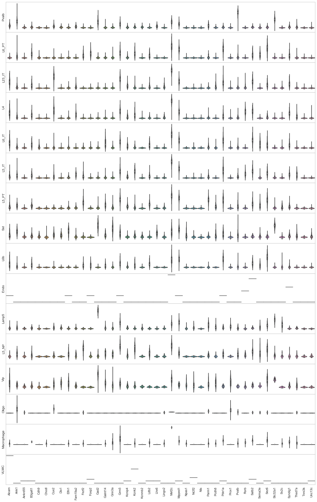
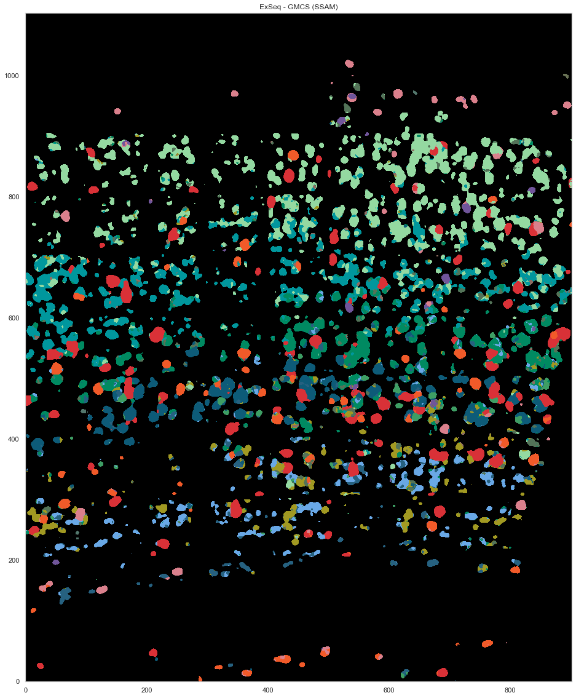
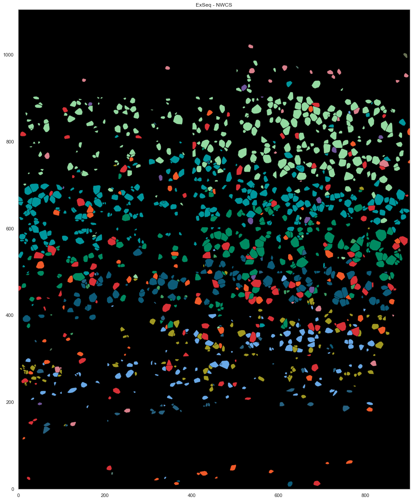
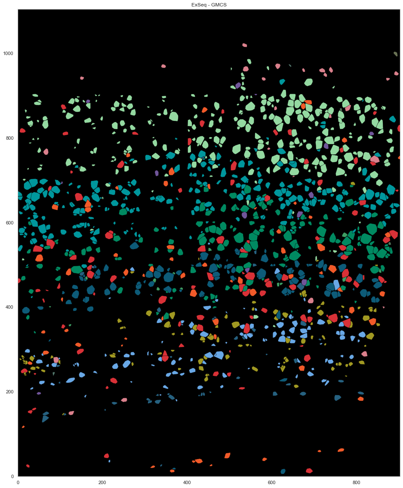

ExSeq data SSAM analysis¶
[32]:
import matplotlib.pyplot as plt
import seaborn as sns
from sklearn import preprocessing
import pickle
import numpy as np
import pandas as pd
from shapely.geometry import Point, Polygon
[33]:
plt.rcParams["font.family"] = "Arial"
[34]:
cell_class_colors = {
"Lamp5": "#DA808C",
"Sncg": "#8510C0",
"Serpinf1": "#8510C0",
"Vip": "#70559A",
"Sst": "#F15A29",
"Pvalb": "#D93137",
"L2/3 IT": "#94D9A1",
"L4": "#00979D",
"L5 IT": "#008A61",
"L6 IT": "#A19922",
"L5 PT": "#0D5B78",
"L5 NP": "#3E9E64",
"L6 CT": "#69A8E6",
"L6 PT": "#69A8E6",
"L6b": "#266180",
"Meis2": "#FF0000",
"CR": "#00FF66",
"Astro": "#665C47",
"Oligo": "#53776C",
"VLMC": "#697255",
"Peri": "#665547",
"SMC": "#807059",
"Endo": "#8D6C62",
"Macrophage": "#537358",
}
[3]:
seg_df = pd.read_csv("data/baysor/ex_seq/segmentation.csv")
[4]:
pd.read_csv("data/raw/spottable_exseq.csv")
[4]:
| FOV | PositionsPix_1 | PositionsPix_2 | PositionsPix_3 | PositionsGlobalPix_1 | PositionsGlobalPix_2 | PositionsGlobalPix_3 | PositionsUm_1 | PositionsUm_2 | PositionsUm_3 | BaseCalls_1 | BaseCalls_2 | BaseCalls_3 | BaseCalls_4 | GeneName | |
|---|---|---|---|---|---|---|---|---|---|---|---|---|---|---|---|
| 0 | 0 | 525.394737 | 1400.894737 | 1.763158 | 647.105263 | 525.394737 | 1.763158 | 26.269737 | 70.044737 | 0.211579 | 3 | 2 | 2 | 1 | Mef2c |
| 1 | 0 | 515.787879 | 1439.606061 | 1.363636 | 608.393939 | 515.787879 | 1.363636 | 25.789394 | 71.980303 | 0.163636 | 2 | 0 | 2 | 2 | Grin3a |
| 2 | 0 | 1661.434783 | 1253.086957 | 2.130435 | 794.913043 | 1661.434783 | 2.130435 | 83.071739 | 62.654348 | 0.255652 | 1 | 0 | 2 | 1 | Mpped1 |
| 3 | 0 | 1876.357143 | 1560.404762 | 2.023810 | 487.595238 | 1876.357143 | 2.023810 | 93.817857 | 78.020238 | 0.242857 | 1 | 0 | 2 | 1 | Mpped1 |
| 4 | 0 | 109.921875 | 471.234375 | 2.609375 | 1576.765625 | 109.921875 | 2.609375 | 5.496094 | 23.561719 | 0.313125 | 2 | 0 | 2 | 2 | Grin3a |
| ... | ... | ... | ... | ... | ... | ... | ... | ... | ... | ... | ... | ... | ... | ... | ... |
| 265342 | 98 | 297.687097 | 762.422581 | 97.145161 | 17341.897419 | 20368.087097 | 97.145161 | 14.884355 | 38.121129 | 11.657419 | 2 | 2 | 1 | 3 | Satb2 |
| 265343 | 98 | 84.408730 | 525.638889 | 119.900794 | 17578.681111 | 20154.808730 | 119.900794 | 4.220437 | 26.281944 | 14.388095 | 1 | 3 | 3 | 1 | Rorb |
| 265344 | 98 | 1238.582677 | 299.692913 | 124.070866 | 17804.627087 | 21308.982677 | 124.070866 | 61.929134 | 14.984646 | 14.888504 | 3 | 3 | 0 | 0 | Thsd7a |
| 265345 | 98 | 1006.573529 | 2006.312500 | 125.764706 | 16098.007500 | 21076.973529 | 125.764706 | 50.328676 | 100.315625 | 15.091765 | 1 | 1 | 0 | 0 | Npas1 |
| 265346 | 98 | 1013.635484 | 2013.854839 | 126.222581 | 16090.465161 | 21084.035484 | 126.222581 | 50.681774 | 100.692742 | 15.146710 | 1 | 1 | 0 | 0 | Npas1 |
265347 rows × 15 columns
[5]:
spots = pd.read_csv("data/raw/spottable_exseq.csv", usecols=["GeneName", "PositionsGlobalPix_1", "PositionsGlobalPix_2", "PositionsGlobalPix_3"]).rename(columns={"GeneName": "gene", "PositionsGlobalPix_1": "x", "PositionsGlobalPix_2": "y", "PositionsGlobalPix_3": "z"}).set_index('gene')
spots.x *= 0.05
spots.y *= 0.05
spots.z *= 0.12
spots.x -= spots.x.min()
spots.y -= spots.y.min()
spots.z -= spots.z.min()
[6]:
spots['cell'] = seg_df['cell'].to_numpy()
[7]:
plt.figure(figsize=[20, 15])
plt.scatter(spots.x, spots.y, s=0.1, c="r")
[7]:
<matplotlib.collections.PathCollection at 0x7f351b29da60>

[4]:
import ssam
[5]:
ds = ssam.SSAMDataset("ssam_data/exseq")
analysis = ssam.SSAMAnalysis(ds, ncores=10, verbose=True)
[11]:
width = int(spots.x.max())
height = int(spots.y.max())
depth = int(spots.z.max())
analysis.run_kde(locations=spots, width=width, height=height, depth=depth, bandwidth=2.5, re_run=True)
Running KDE for gene Alcam...
Saving KDE for gene Alcam...
Running KDE for gene Ank1...
Saving KDE for gene Ank1...
Running KDE for gene Ankrd55...
Saving KDE for gene Ankrd55...
Running KDE for gene B3galt1...
Saving KDE for gene B3galt1...
Running KDE for gene Cdh9...
Saving KDE for gene Cdh9...
Running KDE for gene Chodl...
Saving KDE for gene Chodl...
Running KDE for gene Cux2...
Saving KDE for gene Cux2...
Running KDE for gene Dlx1...
Saving KDE for gene Dlx1...
Running KDE for gene Elfn1...
Saving KDE for gene Elfn1...
Running KDE for gene Fam19a2...
Saving KDE for gene Fam19a2...
Running KDE for gene Fezf2...
Saving KDE for gene Fezf2...
Running KDE for gene Foxp2...
Saving KDE for gene Foxp2...
Running KDE for gene Gad2...
Saving KDE for gene Gad2...
Running KDE for gene Galnt14...
Saving KDE for gene Galnt14...
Running KDE for gene Grin3a...
Saving KDE for gene Grin3a...
Running KDE for gene Grm5...
Saving KDE for gene Grm5...
Running KDE for gene Kcnip4...
Saving KDE for gene Kcnip4...
Running KDE for gene Kcnk2...
Saving KDE for gene Kcnk2...
Running KDE for gene Kcnmb2...
Saving KDE for gene Kcnmb2...
Running KDE for gene Ldb2...
Saving KDE for gene Ldb2...
Running KDE for gene Lhx6...
Saving KDE for gene Lhx6...
Running KDE for gene Lingo2...
Saving KDE for gene Lingo2...
Running KDE for gene Mef2c...
Saving KDE for gene Mef2c...
Running KDE for gene Mpped1...
Saving KDE for gene Mpped1...
Running KDE for gene Npas1...
Saving KDE for gene Npas1...
Running KDE for gene Nr2f2...
Saving KDE for gene Nr2f2...
Running KDE for gene Nts...
Saving KDE for gene Nts...
Running KDE for gene Parm1...
Saving KDE for gene Parm1...
Running KDE for gene Pcdh8...
Saving KDE for gene Pcdh8...
Running KDE for gene Pde1a...
Saving KDE for gene Pde1a...
Running KDE for gene Prox1...
Saving KDE for gene Prox1...
Running KDE for gene Pvalb...
Saving KDE for gene Pvalb...
Running KDE for gene Rorb...
Saving KDE for gene Rorb...
Running KDE for gene Satb2...
Saving KDE for gene Satb2...
Running KDE for gene Sema3e...
Saving KDE for gene Sema3e...
Running KDE for gene Sez6...
Saving KDE for gene Sez6...
Running KDE for gene Slc32a1...
Saving KDE for gene Slc32a1...
Running KDE for gene Sv2c...
Saving KDE for gene Sv2c...
Running KDE for gene Syndig1...
Saving KDE for gene Syndig1...
Running KDE for gene Thsd7a...
Saving KDE for gene Thsd7a...
Running KDE for gene Tnni3k...
Saving KDE for gene Tnni3k...
Running KDE for gene Unc13c...
Saving KDE for gene Unc13c...
[6]:
analysis.load_kde()
[12]:
analysis.find_localmax(search_size=3)
Found 3728 local max vectors.
[13]:
plt.figure(figsize=[20, 17])
ds.plot_localmax(rotate=3)

[14]:
analysis.normalize_vectors()
Normalizing...
Processing chunk 1 (of 11)...
Processing chunk 2 (of 11)...
Processing chunk 3 (of 11)...
Processing chunk 4 (of 11)...
Processing chunk 5 (of 11)...
Processing chunk 6 (of 11)...
Processing chunk 7 (of 11)...
Processing chunk 8 (of 11)...
Processing chunk 9 (of 11)...
Processing chunk 10 (of 11)...
Processing chunk 11 (of 11)...
[7]:
calls_nwcs = pd.read_csv("consensus_calls/renee/exSeq_filtered_combined_mapping_neg_weight_subclass.csv")
[8]:
cell_by_gene = pd.read_csv("data/baysor/ex_seq/segmentation_counts.tsv", sep='\t').set_index('gene').T[ds.genes]
[9]:
cell_by_gene = cell_by_gene.iloc[calls_nwcs.sample_name - 1]
[10]:
cell_by_gene
[10]:
| gene | Alcam | Ank1 | Ankrd55 | B3galt1 | Cdh9 | Chodl | Cux2 | Dlx1 | Elfn1 | Fam19a2 | ... | Rorb | Satb2 | Sema3e | Sez6 | Slc32a1 | Sv2c | Syndig1 | Thsd7a | Tnni3k | Unc13c |
|---|---|---|---|---|---|---|---|---|---|---|---|---|---|---|---|---|---|---|---|---|---|
| 1 | 0 | 106 | 0 | 0 | 0 | 0 | 0 | 0 | 0 | 0 | ... | 1 | 0 | 0 | 0 | 0 | 0 | 0 | 0 | 0 | 0 |
| 2 | 1 | 2 | 0 | 4 | 0 | 0 | 0 | 0 | 0 | 1 | ... | 1 | 4 | 7 | 12 | 0 | 0 | 6 | 0 | 0 | 0 |
| 3 | 0 | 0 | 0 | 0 | 0 | 0 | 1 | 0 | 0 | 1 | ... | 0 | 0 | 0 | 3 | 0 | 0 | 0 | 0 | 1 | 0 |
| 4 | 1 | 1 | 0 | 4 | 1 | 0 | 0 | 0 | 1 | 1 | ... | 1 | 3 | 1 | 6 | 1 | 0 | 1 | 0 | 0 | 0 |
| 5 | 6 | 0 | 0 | 1 | 0 | 0 | 12 | 0 | 0 | 1 | ... | 0 | 6 | 0 | 2 | 0 | 1 | 5 | 0 | 0 | 0 |
| ... | ... | ... | ... | ... | ... | ... | ... | ... | ... | ... | ... | ... | ... | ... | ... | ... | ... | ... | ... | ... | ... |
| 1473 | 0 | 1 | 0 | 2 | 0 | 0 | 0 | 0 | 0 | 0 | ... | 0 | 1 | 1 | 4 | 0 | 0 | 0 | 0 | 0 | 0 |
| 1480 | 1 | 1 | 1 | 1 | 0 | 0 | 2 | 0 | 1 | 1 | ... | 0 | 2 | 0 | 3 | 0 | 0 | 2 | 1 | 0 | 0 |
| 1484 | 3 | 0 | 0 | 0 | 0 | 0 | 2 | 0 | 0 | 3 | ... | 2 | 0 | 0 | 0 | 0 | 0 | 2 | 0 | 0 | 0 |
| 1495 | 0 | 1 | 0 | 0 | 0 | 0 | 1 | 0 | 0 | 2 | ... | 2 | 2 | 0 | 1 | 0 | 0 | 2 | 3 | 0 | 0 |
| 1498 | 4 | 0 | 0 | 0 | 0 | 0 | 3 | 0 | 0 | 0 | ... | 3 | 3 | 0 | 1 | 0 | 1 | 1 | 0 | 0 | 0 |
1271 rows × 42 columns
[11]:
from sklearn.preprocessing import normalize
#cell_by_gene_normalized = ssam.run_sctransform(cell_by_gene.reset_index(drop=True), plot_model_pars=True)[0]
cell_by_gene_normalized = np.log(normalize(cell_by_gene, norm="l1", axis=1) * 10 + 1)
cell_by_gene_normalized_scaled = preprocessing.scale(cell_by_gene_normalized)
[12]:
from collections import defaultdict
from itertools import chain
def sort_genes(centroids, tbl, genes, min_exp=0.5):
sorted_genes = defaultdict(lambda: [])
sorted_cnt = 0
while sorted_cnt < len(genes):
for cidx, mean_cl in enumerate(centroids):
for gidx in np.argsort(mean_cl)[::-1]:
if all([not genes[gidx] in l for l in sorted_genes.values()]):
if mean_cl[gidx] < min_exp:
sorted_genes["rem"].append(genes[gidx])
else:
sorted_genes[cidx].append(genes[gidx])
sorted_cnt += 1
break
sorted_genes = list(chain(*[sorted_genes[i] for i in range(len(centroids))])) + sorted_genes["rem"]
sorted_gidx = [list(genes).index(g) for g in sorted_genes]
return tbl[:, sorted_gidx], sorted_genes
[44]:
def plot_heatmap(sorted_cbg, sorted_genes, calls, uniq_calls, cols, figsize):
from sklearn import preprocessing
from mpl_toolkits.axes_grid1 import Divider, Size
from matplotlib import patches
rects = []
sorted_cbg2 = np.zeros_like(sorted_cbg)
curpos = 0
for idx, (cell_type, col) in enumerate(zip(uniq_calls, cols)):
cl_vecs = sorted_cbg[calls.subclass == cell_type]
sorted_cbg2[curpos:curpos+len(cl_vecs)] = cl_vecs
rects.append(patches.Rectangle((curpos, 0), curpos+len(cl_vecs), 1, linewidth=0, facecolor=col))
curpos += len(cl_vecs)
fig = plt.figure(figsize=figsize)
#fig, axes = plt.subplots(2, 1, figsize=[20, 10], sharex=True)
h = [Size.Fixed(1.0), Size.Scaled(1.0)]
v = [Size.Fixed(0), Size.Scaled(1.0), Size.Fixed(0.05), Size.Fixed(0.3)]
divider = Divider(fig, (0, 0, 1, 1), h, v, aspect=False)
ax_heatmap = fig.add_axes(divider.get_position(), axes_locator=divider.new_locator(nx=1, ny=1))
ax_ctbar = fig.add_axes(divider.get_position(), axes_locator=divider.new_locator(nx=1, ny=3), sharex=ax_heatmap)
for rect in rects:
ax_ctbar.add_patch(rect)
ax_ctbar.axes.xaxis.set_visible(False)
ax_ctbar.axes.yaxis.set_visible(False)
for sp in ax_ctbar.spines.values():
sp.set_linewidth(0.5)
sp.set_color('k')
sns.heatmap(sorted_cbg2.T[::-1, :], vmin=-2.5, vmax=2.5, cmap='bwr', yticklabels=sorted_genes[::-1],
cbar=None, ax=ax_heatmap)
ax_heatmap.axes.xaxis.set_visible(False)
for tick in ax_heatmap.get_yticklabels():
tick.set_fontname("Arial")
for sp in ax_heatmap.spines.values():
sp.set_linewidth(0.5)
sp.set_color('k')
sp.set_visible(True)
plt.yticks(rotation=0)
#ax_hist = fig.add_axes([1.02, 0.74, 0.08, 0.1])
#ax_hist.hist(np.ravel(sorted_cbg2), bins=100, histtype='step', lw=3, color='lime')
#ax_hist.set_xlim([-2.5, 2.5])
#ax_hist.axes.xaxis.set_ticks([-2.5, 0, 2.5])
#ax_hist.axes.yaxis.set_visible(False)
return fig
[45]:
uniq_celltypes_nwcs = [cl for cl in cell_class_colors.keys() if cl in calls_nwcs.subclass.unique()]
centroids_nwcs = []
for cell_type in uniq_celltypes_nwcs:
centroids_nwcs.append(np.mean(cell_by_gene_normalized[calls_nwcs.subclass == cell_type], axis=0))
[46]:
centroids_scaled_nwcs = []
for cell_type in uniq_celltypes_nwcs:
centroids_scaled_nwcs.append(np.mean(cell_by_gene_normalized_scaled[calls_nwcs.subclass == cell_type], axis=0))
sorted_cbg, sorted_genes = sort_genes(centroids_scaled_nwcs, cell_by_gene_normalized_scaled, ds.genes)
[47]:
cols = [cell_class_colors[ct] for ct in uniq_celltypes_nwcs]
plot_heatmap(sorted_cbg[:, ::-1], sorted_genes[::-1], calls_nwcs, uniq_celltypes_nwcs, cols, [20, 10]).savefig("exseq_heatmap_nwcs.pdf")

[12]:
from sklearn import preprocessing
fig, axes = plt.subplots(len(uniq_celltypes_nwcs), 1, figsize=[20, len(uniq_celltypes_nwcs)*2])
plt.subplots_adjust(hspace=0)
for idx, cell_type in enumerate(uniq_celltypes_nwcs):
cl_vecs = cell_by_gene_normalized_scaled[calls_nwcs.subclass == cell_type]
if len(cl_vecs) == 1:
cl_vecs = np.array([cl_vecs[0], cl_vecs[0]])
sns.violinplot(ax=axes[idx], data=cl_vecs, width=1)
axes[idx].set_ylabel(cell_type)
axes[idx].set_yticks([])
axes[idx].set_xticklabels(ds.genes, rotation=90)
pass

[22]:
analysis.map_celltypes(centroids_nwcs)
Generating cell-type map for centroid #0...
Processing chunk (0/6)...
Processing chunk (1/6)...
Processing chunk (2/6)...
Processing chunk (3/6)...
Processing chunk (4/6)...
Processing chunk (5/6)...
Generating cell-type map for centroid #1...
Processing chunk (0/6)...
Processing chunk (1/6)...
Processing chunk (2/6)...
Processing chunk (3/6)...
Processing chunk (4/6)...
Processing chunk (5/6)...
Generating cell-type map for centroid #2...
Processing chunk (0/6)...
Processing chunk (1/6)...
Processing chunk (2/6)...
Processing chunk (3/6)...
Processing chunk (4/6)...
Processing chunk (5/6)...
Generating cell-type map for centroid #3...
Processing chunk (0/6)...
Processing chunk (1/6)...
Processing chunk (2/6)...
Processing chunk (3/6)...
Processing chunk (4/6)...
Processing chunk (5/6)...
Generating cell-type map for centroid #4...
Processing chunk (0/6)...
Processing chunk (1/6)...
Processing chunk (2/6)...
Processing chunk (3/6)...
Processing chunk (4/6)...
Processing chunk (5/6)...
Generating cell-type map for centroid #5...
Processing chunk (0/6)...
Processing chunk (1/6)...
Processing chunk (2/6)...
Processing chunk (3/6)...
Processing chunk (4/6)...
Processing chunk (5/6)...
Generating cell-type map for centroid #6...
Processing chunk (0/6)...
Processing chunk (1/6)...
Processing chunk (2/6)...
Processing chunk (3/6)...
Processing chunk (4/6)...
Processing chunk (5/6)...
Generating cell-type map for centroid #7...
Processing chunk (0/6)...
Processing chunk (1/6)...
Processing chunk (2/6)...
Processing chunk (3/6)...
Processing chunk (4/6)...
Processing chunk (5/6)...
Generating cell-type map for centroid #8...
Processing chunk (0/6)...
Processing chunk (1/6)...
Processing chunk (2/6)...
Processing chunk (3/6)...
Processing chunk (4/6)...
Processing chunk (5/6)...
Generating cell-type map for centroid #9...
Processing chunk (0/6)...
Processing chunk (1/6)...
Processing chunk (2/6)...
Processing chunk (3/6)...
Processing chunk (4/6)...
Processing chunk (5/6)...
Generating cell-type map for centroid #10...
Processing chunk (0/6)...
Processing chunk (1/6)...
Processing chunk (2/6)...
Processing chunk (3/6)...
Processing chunk (4/6)...
Processing chunk (5/6)...
Generating cell-type map for centroid #11...
Processing chunk (0/6)...
Processing chunk (1/6)...
Processing chunk (2/6)...
Processing chunk (3/6)...
Processing chunk (4/6)...
Processing chunk (5/6)...
Generating cell-type map for centroid #12...
Processing chunk (0/6)...
Processing chunk (1/6)...
Processing chunk (2/6)...
Processing chunk (3/6)...
Processing chunk (4/6)...
Processing chunk (5/6)...
Generating cell-type map for centroid #13...
Processing chunk (0/6)...
Processing chunk (1/6)...
Processing chunk (2/6)...
Processing chunk (3/6)...
Processing chunk (4/6)...
Processing chunk (5/6)...
Generating cell-type map for centroid #14...
Processing chunk (0/6)...
Processing chunk (1/6)...
Processing chunk (2/6)...
Processing chunk (3/6)...
Processing chunk (4/6)...
Processing chunk (5/6)...
[23]:
analysis.filter_celltypemaps(min_norm=0.05, min_r=0.6)
[24]:
ds.centroids = centroids_nwcs # TODO: this should not be necessary!
[25]:
analysis.bin_celltypemaps(step=10, radius=100)
[26]:
analysis.find_domains(n_clusters=20, merge_remote=False, merge_thres=0.8, norm_thres=4000)
[27]:
plt.figure(figsize=[15, 15])
ds.plot_domains(rotate=3, cmap='rainbow', z=0)
plt.axis('off')
plt.tight_layout()

[28]:
layer_annotations = ds.inferred_domains[ds.local_maxs]
[ ]:
[24]:
# TODO: implement this in SSAM!
ctmap_topview = np.zeros([ds.filtered_celltype_maps.shape[0], ds.filtered_celltype_maps.shape[1], 1], dtype=int) - 1
for z in range(ds.filtered_celltype_maps.shape[-1]):
m = ds.filtered_celltype_maps[..., z] > -1
ctmap_topview[m, 0] = ds.filtered_celltype_maps[..., z][m]
ds.filtered_celltype_maps = ctmap_topview
[25]:
map_colors_nwcs = [cell_class_colors[ct] for ct in uniq_celltypes_nwcs]
[27]:
plt.figure(figsize=[20, 20])
ds.plot_celltypes_map(rotate=3, z=0, colors=map_colors_nwcs)
plt.title("ExSeq - NWCS (SSAM)")
[27]:
Text(0.5, 1.0, 'ExSeq - NWCS (SSAM)')

[39]:
calls_gmcs = pd.read_csv("consensus_calls/charles/exseq_jeremy_pciseq_renee_eeshit_consensus_df.csv")
[40]:
for cl in calls_gmcs.subclass.unique():
if cl == "L23_IT":
calls_gmcs.subclass.loc[calls_gmcs.subclass == "L23_IT"] = "L2/3 IT"
elif "_" in cl:
calls_gmcs.subclass.loc[calls_gmcs.subclass == cl] = cl.replace("_", " ")
/tmp/ipykernel_263/1845947111.py:5: SettingWithCopyWarning:
A value is trying to be set on a copy of a slice from a DataFrame
See the caveats in the documentation: https://pandas.pydata.org/pandas-docs/stable/user_guide/indexing.html#returning-a-view-versus-a-copy
calls_gmcs.subclass.loc[calls_gmcs.subclass == cl] = cl.replace("_", " ")
/tmp/ipykernel_263/1845947111.py:3: SettingWithCopyWarning:
A value is trying to be set on a copy of a slice from a DataFrame
See the caveats in the documentation: https://pandas.pydata.org/pandas-docs/stable/user_guide/indexing.html#returning-a-view-versus-a-copy
calls_gmcs.subclass.loc[calls_gmcs.subclass == "L23_IT"] = "L2/3 IT"
[48]:
uniq_celltypes_gmcs = [cl for cl in cell_class_colors.keys() if cl in calls_gmcs.subclass.unique()]
centroids_gmcs = []
for cell_type in uniq_celltypes_gmcs:
centroids_gmcs.append(np.mean(cell_by_gene_normalized[calls_gmcs.subclass == cell_type], axis=0))
[49]:
centroids_scaled_gmcs = []
for cell_type in uniq_celltypes_gmcs:
centroids_scaled_gmcs.append(np.mean(cell_by_gene_normalized_scaled[calls_gmcs.subclass == cell_type], axis=0))
sorted_cbg, sorted_genes = sort_genes(centroids_scaled_gmcs, cell_by_gene_normalized_scaled, ds.genes)
[50]:
cols = [cell_class_colors[ct] for ct in uniq_celltypes_gmcs]
plot_heatmap(sorted_cbg[:, ::-1], sorted_genes[::-1], calls_gmcs, uniq_celltypes_gmcs, cols, [20, 10]).savefig("exseq_heatmap_gmcs.pdf")

[15]:
from sklearn import preprocessing
fig, axes = plt.subplots(len(uniq_celltypes_gmcs), 1, figsize=[20, len(uniq_celltypes_gmcs)*2])
plt.subplots_adjust(hspace=0)
for idx, cell_type in enumerate(uniq_celltypes_gmcs):
cl_vecs = cell_by_gene_normalized_scaled[calls_gmcs.subclass == cell_type]
if len(cl_vecs) == 1:
cl_vecs = np.array([cl_vecs[0], cl_vecs[0]])
sns.violinplot(ax=axes[idx], data=cl_vecs, width=1)
axes[idx].set_ylabel(cell_type)
axes[idx].set_yticks([])
axes[idx].set_xticklabels(ds.genes, rotation=90)
pass

[30]:
analysis.map_celltypes(centroids_gmcs)
Generating cell-type map for centroid #0...
Processing chunk (0/6)...
Processing chunk (1/6)...
Processing chunk (2/6)...
Processing chunk (3/6)...
Processing chunk (4/6)...
Processing chunk (5/6)...
Generating cell-type map for centroid #1...
Processing chunk (0/6)...
Processing chunk (1/6)...
Processing chunk (2/6)...
Processing chunk (3/6)...
Processing chunk (4/6)...
Processing chunk (5/6)...
Generating cell-type map for centroid #2...
Processing chunk (0/6)...
Processing chunk (1/6)...
Processing chunk (2/6)...
Processing chunk (3/6)...
Processing chunk (4/6)...
Processing chunk (5/6)...
Generating cell-type map for centroid #3...
Processing chunk (0/6)...
Processing chunk (1/6)...
Processing chunk (2/6)...
Processing chunk (3/6)...
Processing chunk (4/6)...
Processing chunk (5/6)...
Generating cell-type map for centroid #4...
Processing chunk (0/6)...
Processing chunk (1/6)...
Processing chunk (2/6)...
Processing chunk (3/6)...
Processing chunk (4/6)...
Processing chunk (5/6)...
Generating cell-type map for centroid #5...
Processing chunk (0/6)...
Processing chunk (1/6)...
Processing chunk (2/6)...
Processing chunk (3/6)...
Processing chunk (4/6)...
Processing chunk (5/6)...
Generating cell-type map for centroid #6...
Processing chunk (0/6)...
Processing chunk (1/6)...
Processing chunk (2/6)...
Processing chunk (3/6)...
Processing chunk (4/6)...
Processing chunk (5/6)...
Generating cell-type map for centroid #7...
Processing chunk (0/6)...
Processing chunk (1/6)...
Processing chunk (2/6)...
Processing chunk (3/6)...
Processing chunk (4/6)...
Processing chunk (5/6)...
Generating cell-type map for centroid #8...
Processing chunk (0/6)...
Processing chunk (1/6)...
Processing chunk (2/6)...
Processing chunk (3/6)...
Processing chunk (4/6)...
Processing chunk (5/6)...
Generating cell-type map for centroid #9...
Processing chunk (0/6)...
Processing chunk (1/6)...
Processing chunk (2/6)...
Processing chunk (3/6)...
Processing chunk (4/6)...
Processing chunk (5/6)...
Generating cell-type map for centroid #10...
Processing chunk (0/6)...
Processing chunk (1/6)...
Processing chunk (2/6)...
Processing chunk (3/6)...
Processing chunk (4/6)...
Processing chunk (5/6)...
Generating cell-type map for centroid #11...
Processing chunk (0/6)...
Processing chunk (1/6)...
Processing chunk (2/6)...
Processing chunk (3/6)...
Processing chunk (4/6)...
Processing chunk (5/6)...
Generating cell-type map for centroid #12...
Processing chunk (0/6)...
Processing chunk (1/6)...
Processing chunk (2/6)...
Processing chunk (3/6)...
Processing chunk (4/6)...
Processing chunk (5/6)...
Generating cell-type map for centroid #13...
Processing chunk (0/6)...
Processing chunk (1/6)...
Processing chunk (2/6)...
Processing chunk (3/6)...
Processing chunk (4/6)...
Processing chunk (5/6)...
Generating cell-type map for centroid #14...
Processing chunk (0/6)...
Processing chunk (1/6)...
Processing chunk (2/6)...
Processing chunk (3/6)...
Processing chunk (4/6)...
Processing chunk (5/6)...
Generating cell-type map for centroid #15...
Processing chunk (0/6)...
Processing chunk (1/6)...
Processing chunk (2/6)...
Processing chunk (3/6)...
Processing chunk (4/6)...
Processing chunk (5/6)...
[31]:
analysis.filter_celltypemaps(min_norm=0.05, min_r=0.6)
[32]:
# TODO: implement this in SSAM!
ctmap_topview = np.zeros([ds.filtered_celltype_maps.shape[0], ds.filtered_celltype_maps.shape[1], 1], dtype=int) - 1
for z in range(ds.filtered_celltype_maps.shape[-1]):
m = ds.filtered_celltype_maps[..., z] > -1
ctmap_topview[m, 0] = ds.filtered_celltype_maps[..., z][m]
ds.filtered_celltype_maps = ctmap_topview
[33]:
map_colors_gmcs = [cell_class_colors[ct.replace("_", " ").replace("L23", "L2/3")] for ct in uniq_celltypes_gmcs]
[35]:
plt.figure(figsize=[20, 20])
ds.plot_celltypes_map(rotate=3, z=0, colors=map_colors_gmcs)
plt.title("ExSeq - GMCS (SSAM)")
[35]:
Text(0.5, 1.0, 'ExSeq - GMCS (SSAM)')

[31]:
closest_nwcs_clusters = []
closest_nwcs_clusters_r = []
closest_gmcs_clusters = []
closest_gmcs_clusters_r = []
for v in ds.normalized_vectors:
corrs = [ssam.utils.corr(v, centroids_nwcs[i]) for i in range(len(centroids_nwcs))]
idx = np.argmax(corrs)
closest_nwcs_clusters.append(uniq_celltypes_nwcs[idx])
closest_nwcs_clusters_r.append(corrs[idx])
corrs = [ssam.utils.corr(v, centroids_gmcs[i]) for i in range(len(centroids_gmcs))]
idx = np.argmax(corrs)
closest_gmcs_clusters.append(uniq_celltypes_gmcs[idx])
closest_gmcs_clusters_r.append(corrs[idx])
df = pd.DataFrame(ds.normalized_vectors, columns=ds.genes)
df.to_csv("exseq_ssam_localmax_expression.csv")
df = pd.DataFrame()
df['x'] = ds.local_maxs[0]
df['y'] = ds.local_maxs[1]
df['closest_consensus_nwcs_cluster'] = closest_nwcs_clusters
df['closest_consensus_nwcs_cluster_r'] = closest_nwcs_clusters_r
df['closest_consensus_gmcs_cluster'] = closest_gmcs_clusters
df['closest_consensus_gmcs_cluster_r'] = closest_gmcs_clusters_r
df['layer_annotations_nwcs'] = layer_annotations
df.to_csv("exseq_ssam_localmax_metadata_with_layer.csv")
[329]:
from scipy.spatial import ConvexHull
plt.figure(figsize=[20, 20])
plt.gca().set_facecolor('black')
good_ids = cell_by_gene.index.astype(int)
i = 0
for cid, sdf in spots.groupby("cell"):
if cid in good_ids:
points = sdf.iloc[:, :2].to_numpy()
hull = ConvexHull(points)
plt.fill(points[hull.vertices, 0], points[hull.vertices, 1], cell_class_colors[calls_nwcs.subclass[i]], edgecolor="black", linewidth=0.5)
i += 1
plt.xlim([0, ds.shape[0]])
plt.ylim([0, ds.shape[1]])
plt.gca().set_aspect('equal', adjustable='box')
plt.title("ExSeq - NWCS")
[329]:
Text(0.5, 1.0, 'ExSeq - NWCS')

[328]:
from scipy.spatial import ConvexHull
plt.figure(figsize=[20, 20])
plt.gca().set_facecolor('black')
good_ids = cell_by_gene.index.astype(int)
i = 0
for cid, sdf in spots.groupby("cell"):
if cid in good_ids:
points = sdf.iloc[:, :2].to_numpy()
hull = ConvexHull(points)
plt.fill(points[hull.vertices, 0], points[hull.vertices, 1], cell_class_colors[calls_gmcs.subclass[i].replace("_", " ").replace("L23", "L2/3")], edgecolor="black", linewidth=0.5)
i += 1
plt.xlim([0, ds.shape[0]])
plt.ylim([0, ds.shape[1]])
plt.gca().set_aspect('equal', adjustable='box')
plt.title("ExSeq - GMCS")
[328]:
Text(0.5, 1.0, 'ExSeq - GMCS')
